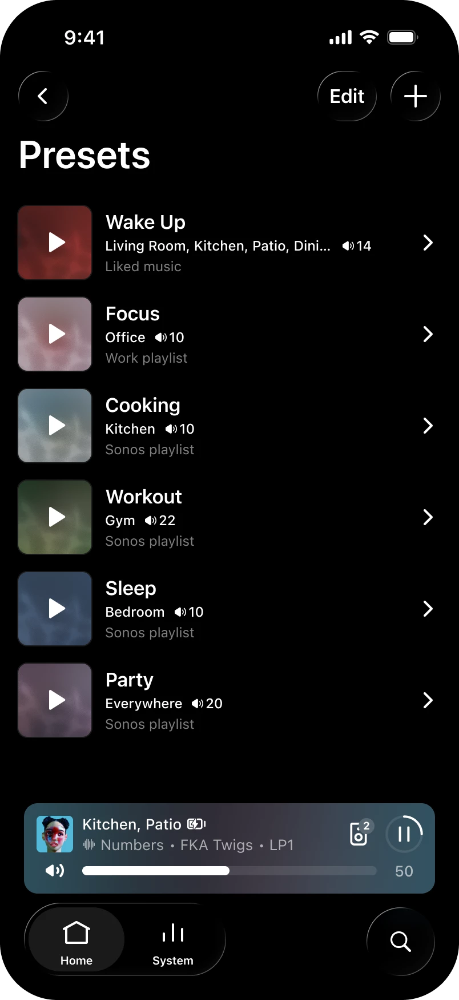
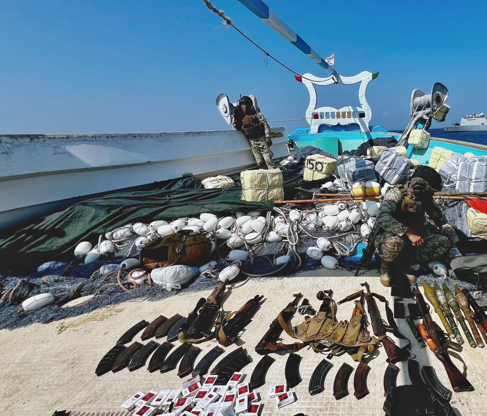

科技產品 T1

Sonos 27.3 Presets官方操作畫面，並非27voice介面或本報實測。 Sonos官方社群更新帖
Sonos 推出 27.3 更新，新增房間與音量預設並改善日常播放操作
發佈時間
Sonos／Sonos 27.3 App與Player
Sonos 27.3開始分批推出，Presets可把播放內容、房間和音量預先保存，另加入收藏排序、滑動切歌及系統管理改善。
- Presets可一鍵在選定房間，以指定音量播放已保存的內容。
- 收藏可調整排序，Now Playing或迷你播放器可滑動切歌；Spotify音量與其他服務的一致性亦獲調整。
- iOS新增System Health自助檢查，Android可重排已連接服務；官方提醒更新可能分數天甚至數週送達。
完整報告收合報告
事件背景與影響
這些變更直接影響常用播放流程，讓使用者少做重複設定；但App與播放器更新及功能分批開放，看到公告不代表所有裝置立即具備全部功能。
事件與發佈依據
官方社群工作人員11/3 14:47 UTC發布本次具體更新；不是將九月Sonos 27首次介紹重新收錄。
收錄紀錄
10/21至11/3十四份日報查無Sonos、27voice；同窗31列產品表也無此更新。
尚待確認
27voice是另一個美國限定、US-English早期測試項目；官方只寫秋季及即將開放申請，媒體稱11/6。本文不把該日期寫成全球正式可用，也不把Presets截圖當成語音助理介面。
相關實體與概念
Sonos、27.3、Presets、多房間音訊、分批更新。
科技產品 T2
Meta 公布 Quest 2 與 Quest Pro 功能更新終點，安全修正延續至二〇二七年底
發佈時間
Meta／Quest 2、Quest Pro、Horizon OS
Quest 2與Quest Pro將以v2.13作為最後主要作業系統版本，預計2027年3月前送達；安全補丁與關鍵錯誤修正持續到2027年底。
- 最終版本之後的新OS功能、平台能力與API只面向Quest 3、Quest 3S及更新裝置。
- Quest 2與Quest Pro的新應用提交至2027年12月，既有應用仍可發布更新。
- 官方表示商店購買、下載、既有內容及與Quest 3／3S跨機遊玩繼續保留。
完整報告收合報告
事件背景與影響
開發者有明確期限調整支援範圍，使用者也能區分「不再新增功能」與「裝置立即失效」。既有內容、商店及跨機型遊玩不因這項公告一併關閉。
事件與發佈依據
Meta開發者公告標示11/2，公開最終OS、SDK與新應用提交時間表；不以11/3媒體報導日期充當首次公告。
收錄紀錄
十四份日報及同範圍產品表均無本次終止功能開發的具體路線。
尚待確認
官方原文混用v2.13與v213表示版本，本文沿用其最終OS名稱；不保證每款第三方遊戲永久支援。官方直接頁僅取得空殼，日期與段落由官方頁搜尋索引核對，未實機測試。
相關實體與概念
Meta、Quest、Horizon OS、SDK、產品生命週期。
全球焦點 1
美國期中選舉進入投票與初步關閉階段，國會控制權仍待開票
發佈時間
美國選民就國會改選投票，首批投票站已關閉，但多州仍在投票或剛開始計票。截點時不能宣布哪一黨取得眾院或參院多數。
- 本次改選涵蓋眾院全部435席及參院35席。
- 首批投票站於美東18時關閉，其他地區依時區與規則陸續結束。
- Reuters描述選民關注負擔能力與生活成本；政黨優勢預測仍是民調，不是已獲席次。
完整報告收合報告
事件背景與影響
國會控制權將影響川普第二任期後半的立法與監督；不同州關閉與計票速度不一，早期票數不能直接代表全國最終席次。
事件與發佈依據
11/3實際投票；印第安納與肯塔基部分投票站23:00 UTC起關閉，即台北11/4 07:00，早於研究截點。
收錄紀錄
十四份日報未收錄本次實際投票及首批關閉節點；民調與競選背景不當成選舉結果。
尚待確認
正式結果、郵寄與臨時選票處理仍待後續；本文沒有使用研究截點後的勝選宣告或媒體席次判定。
相關實體與概念
美國、期中選舉、國會、川普、共和黨、民主黨。
全球焦點 2
川普稱年底將停止每年約四十億美元援以資金，具體執行方式尚未說明
發佈時間
川普表示與納坦雅胡已討論停止每年約40億美元資金，打算在2026年底後不再支付，但仍會對以色列出售武器。
- 川普稱雙方數月前達成安排，但未公布具體執行文件。
- 既有安排每年約38億美元軍援，與川普口中的約40億為不同精確度。
- Reuters指出現行諒解備忘錄延續至2028年，如何提前停止仍不清楚。
完整報告收合報告
事件背景與影響
這涉及長期美以軍事援助安排，若執行會改變資金與軍購關係；總統表態、預算法律和國會角色必須分開看待。
事件與發佈依據
Reuters 11/3 08:28 EST首發，依當日Fox電話訪問的新說法；不把較早私下討論當今日已執行的政策。
收錄紀錄
十四份日報無本次明確年底期限與援助金額的新披露。
尚待確認
不能寫成援助已停止、所有軍售取消或法律程序已完成；以方與國會後續如何處理仍待確認。
相關實體與概念
美國、以色列、川普、納坦雅胡、軍援、國會預算。
全球焦點 3
格陵蘭議會批准與美丹安全協議，丹麥國會程序仍待完成
發佈時間
格陵蘭議會以16票贊成、0票反對、7票棄權批准安全協議，為擴大美軍部署提供程序進展，但協議尚待丹麥完成批准。
- 協議涉及兩座新軍事基地及美國飛彈防禦部署，同時重申丹麥主權與格陵蘭自決權。
- 反對黨Naleraq質疑協議對當地帶來多少經濟利益。
- 丹麥國會預定11/11初讀、11/19進一步審議與表決。
完整報告收合報告
事件背景與影響
這是從簽署進入議會批准的新法律程序；安全部署、主權與當地經濟利益的爭議並未因一場表決全部解決。
事件與發佈依據
Reuters週二表決結果報導、AOL於17:33 UTC更新確認通過；較早「準備批准」報導不當作已完成表決的時刻。
收錄紀錄
十四份日報未收錄本次格陵蘭議會正式批准節點。
尚待確認
格陵蘭批准不等於兩國程序全部完成，更不等於美國取得格陵蘭主權；新基地的具體進度仍待執行安排。
相關實體與概念
格陵蘭、丹麥、美國、Inatsisartut、北極安全、自決。
全球焦點 4
澳洲央行升息一碼至百分之四點八五，九名委員中三人主張維持利率
發佈時間
澳洲央行以6比3票將現金利率目標提高25基點至4.85%，指出通膨仍廣泛偏高，最新預測亦上修通膨持續時間。
- 六名委員支持升息，三名支持維持4.60%。
- 官方指出中東衝突推高燃料成本，國內產能及成本壓力也比原估更緊。
- 央行預期通膨回到目標區間的時間延後，同時預期失業率進一步上升。
完整報告收合報告
事件背景與影響
借貸成本再升與經濟、房市放緩同時存在，顯示央行在控制物價和就業風險間的權衡，不是單一成長強弱判斷。
事件與發佈依據
澳洲央行官方11/3 14:30 AEDT發布第2026-30號決議；採實際決議，不是上週市場預測。
收錄紀錄
十四份日報未收錄本次11月利率決策。
尚待確認
決議沒有承諾下一次必然升息或暫停；經濟與通膨預測取決於能源、需求及生產力變化，不是保證結果。
相關實體與概念
澳洲央行、現金利率、通膨、就業、貨幣政策。
全球焦點 5
波蘭總理稱已阻止俄國邊境疑似挑釁，並強調意圖尚難完全確認
發佈時間
圖斯克表示邊防發現可疑動向後迅速調動安全力量，阻止可能的挑釁；他同時承認，未必能完全確認對方原本意圖。
- 事件位於波蘭與俄國加里寧格勒外飛地邊境。
- 波蘭近期依本國及盟友情報加強警察、邊防與軍方協作。
- 圖斯克呼籲提高對破壞或其他挑釁的警覺，並未提供完整獨立證據。
完整報告收合報告
事件背景與影響
北約東翼將可疑動向視為需預防的風險，但必須區分情報警告、疑似行動與已證實武裝入侵，避免把猜測當戰事升級。
事件與發佈依據
AP 11/3 12:58:15 UTC首發，ANSA-AFP同日補充總理原話；採週二新披露與安全行動確認，不將夜間動向的未知秒數移入窗內。
收錄紀錄
十一月一日波蘭憲法法庭爭議是不同事件；十四報未收錄本次加里寧格勒邊境疑似挑釁。
尚待確認
原意、參與者與指揮關係未完全公開；不能斷言俄軍已武裝越境，亦不能將預防措施等同已發生戰鬥。
相關實體與概念
波蘭、Donald Tusk、加里寧格勒、北約、邊境安全。
全球焦點 6
歐洲多班客機接獲炸彈威脅後改降或安檢，已完成檢查者未發現爆裂物
發佈時間
Ryanair、Wizz Air、LOT及SAS等航班在歐洲接獲炸彈威脅，部分改降或接受安全檢查；已公布完成的檢查未找到炸彈。
- 羅馬Fiumicino對兩架Ryanair客機執行搜索，機場表示未對其他航班造成全面停擺。
- LOT倫敦來機改降Warsaw-Modlin，機場一度暫停後恢復運作。
- 保加利亞與波蘭公布部分客機落地檢查未發現爆裂物；各案處置進度不同。
完整報告收合報告
事件背景與影響
即使是假威脅，航班改降與搜索仍耗費安全資源並影響乘客；目前證據不足以認定各案具有共同策畫者。
事件與發佈依據
Reuters彙整11/3航空公司及機場當日聲明；10/18及11/2案例只是背景，不併入本日新事件。
收錄紀錄
十四份日報未收錄本次11/3跨國航班威脅與處置。
尚待確認
「未發現炸彈」不代表已查明發訊者或所有案件關聯；不把舊航班事件重新算成今天，也不把局部中斷說成全歐空域關閉。
相關實體與概念
歐洲航空、炸彈威脅、Ryanair、Wizz Air、LOT、SAS。
全球焦點 7
捷克公共媒體員工發動一日罷工，抗議改由國家預算支應及削減經費
發佈時間
捷克公共電視及廣播員工罷工一天，反對政府取消收視收聽費、改由國家預算供款並減少經費；示威者擔心編輯獨立性受損。
- 改革涉及取消每戶每月205捷克克朗費用，並提出約15%經費削減。
- 罷工造成播出限制，學生、藝術工作者及其他支持者參與示威。
- 法案僅通過初步程序，仍待國會進一步審議，並非所有改革已生效。
完整報告收合報告
事件背景與影響
公共媒體的資金來源與法律防護會影響其抵抗政治壓力的能力；政府則將改革定位為減輕家庭負擔，雙方論點需分別呈現。
事件與發佈依據
Reuters經MarketScreener11/3 04:27 EST報導實際罷工；AOL同日後續報導街頭示威，不只是重述上月法案初讀。
收錄紀錄
十四份日報未收錄本次公共電視與廣播一日罷工。
尚待確認
員工稱可能導致政治干預，政府否認有意控制媒體；法律最終內容與資金保障仍可能改變。
相關實體與概念
捷克、Czech Television、Czech Radio、Andrej Babis、公共媒體獨立。
全球焦點 8
尼泊爾聖母峰登山路線附近兩架直升機降落時相撞，造成一死多人受傷
發佈時間
兩架直升機在海拔約4,200公尺的Pheriche降落區相撞，一名旅客死亡。早期AP報導兩人受傷，較晚警方說法增加為三人。
- 涉及Air Dynasty及Fishtail Air直升機，兩機均在準備降落。
- 當地媒體引警方稱死者為印度旅客，傷者包含兩名飛行員。
- ABC及Onlinekhabar後續報導為三傷，與初報兩傷存在時間差異。
完整報告收合報告
事件背景與影響
該地位於通往聖母峰基地營的路線，航空承擔運輸與撤離功能；事故原因仍須調查，不能因山區環境就直接歸咎天候或駕駛。
事件與發佈依據
AP初報11/3 05:09:16 UTC；當地媒體引機場與警方稱事故08:11尼泊爾時間發生，約台北10:26，均在窗內。
收錄紀錄
十四報中直升機命中是不同地區救援限制；沒有本次Pheriche相撞事件。
尚待確認
採「多人受傷」並保留二與三的差異，不把初步通報當最終調查；撞擊順序與責任尚未確認。
相關實體與概念
尼泊爾、Pheriche、Solukhumbu、直升機、航空安全。
全球焦點 9

印度國防部隨救援公告發布的影像；未宣稱攝於11月3日。 印度國防部／PIB
印度國防部公布 Azini 漁船救援結果，二十名船員全數獲救
發佈時間
印度國防部表示，海軍經超過48小時協同行動，解救在索馬利亞外海遭海盜劫持的Azini漁船，20名船員全數安全獲救。
- 國防部稱無人死亡或受傷，並已安全控制船隻。
- 任務使用軍艦、海上偵察機與海軍突擊隊，空軍C-17協助空投增援。
- 漁船先前在索馬利亞東北外海遭劫，救援並非當日新發生的劫持。
完整報告收合報告
事件背景與影響
漁船可能被用作後續劫掠的母船，救出船員同時降低區域航運風險；官方成功敘述仍須與可獨立核實的範圍分開。
事件與發佈依據
印度PIB11/3 08:45 IST正式發布完整救援結果；行動11/2完成屬背景，今天的新節點是官方披露，不改寫完成日期。
收錄紀錄
十四份日報未收錄本次Azini救援結果；索馬利亞其他軍事任務不是同一事件。
尚待確認
行動細節主要依印度官方，對海盜人數及後續司法處置未有完整公開資料；隨稿照片不證明攝於公告當日。
相關實體與概念
印度海軍、Azini、索馬利亞、海盜、海上安全。
全球焦點 10
阿富汗官員確認塔利班將以觀察員身分出席 COP31，不具正式談判資格
發佈時間
阿富汗環境官員向AP確認將赴土耳其Antalya參加COP31；土方亦確認以觀察員身分出席。這不是已獲正式代表席次或政府承認。
- 這將是塔利班2021年重新掌權後第二次以觀察員出席聯合國氣候峰會。
- 觀察員可參加討論，但不在政策與目標的正式談判中扮演代表角色。
- 婦女人權倡議者質疑塔利班能否代表全體阿富汗民眾；氣候倡議者強調援助不應讓居民受罰。
完整報告收合報告
事件背景與影響
阿富汗面臨乾旱與水患等氣候風險，但參與及融資需求與塔利班的人權、代表性爭議並存，不能以受邀出席掩蓋制度差異。
事件與發佈依據
AP經ABC11/3 07:34 EST報導喀布爾官員確認邀請；14:33:54 UTC為頁面較晚更新，非首次發布。
收錄紀錄
十四報中塔利班命中是巴基斯坦安全指控，不是本次COP31出席確認。
尚待確認
公告是受邀及計畫赴會，不是已到場或取得資金；觀察員安排不等於多數國家承認塔利班政府。
相關實體與概念
阿富汗、塔利班、COP31、土耳其、氣候融資、觀察員。
研究備註
時間、來源與後續追蹤
研究截點 2026-11-04 08:02:06（Asia/Taipei）
研究時間與範圍
研究截點：2026-11-04 08:02:06（Asia/Taipei）。全球新聞：2026-11-03 08:02:06 至 2026-11-04 08:02:06（Asia/Taipei）。科技產品：2026-10-21 08:02:06 至 2026-11-04 08:02:06（Asia/Taipei）。